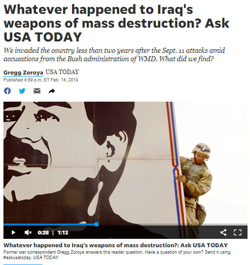

Trainees Edition
Trainers Edition
Trainees Edition
Trainers Edition
Module 3: Causes and Consequences of Information Pollution
Module Description
The main purpose of this module is to present causes and consequences of information pollution, in order to increase the awareness of learners regarding the motivation behind the creation of information pollution as well as its possible impacts.
The secondary aim is to guide trainers who want to use the content of this Module to train their learners.
With these aims in this module, motivations behind creating and spreading false or misleading information and its effect on public and democracies along with guidelines about how to teach the subject are covered.
Learners who successfully complete this module will be able to:
- demonstrate an understanding of the intend and motivation behind the information pollution
- demonstrate an understanding of the consequences of information pollution
- demonstrate an understanding of one’s responsibility in the fight against information pollution
Additionally, trainers who successfully complete this module, will be able to demonstrate an understanding of the guidelines for training on the subject.
Module Structure
This module consists of the following parts:
- Module Description (objectives, description of the content and learning outcomes)
- Module Structure
- Guidelines for Trainees
- Guidelines for Trainers (how to get prepared, methods to use and tips for trainers)
- Content (study materials and exercises)
- Quiz
- Resources (references and recommended resources and videos)
Main objectives of the module, description of the content and the learning outcomes are explained in the Module Description part. Content includes all study materials and the content related exercises. Quiz includes multiple choice questions for trainees to test their progress. Resources have two components: references and recommended resources for further study. References is the list of resources cited in the content part. Recommended resources consist of a list of supplemental sources and videos which are highly recommended to read and watch for learning more on the topic. Guidelines for Trainees includes instructions and suggestions for learners. Guidelines for Trainers leads trainers through different phases of the training and provides tips which could be useful while teaching the subject.
Guidelines for Trainees
Learners are expected to read the text, closely study examples, watch recommended videos and do the exercises. They can consult suggested resources for further information. After completing the study of the content learners are strongly suggested to take the quiz to evaluate their progress. They can revise the study material when and if needed.
Guidelines for Trainers
Guidelines for trainers includes suggestions and tips for trainers about how to use the content of this module to train people on the causes and consequences of information pollution.
Getting Prepared
Preparing a presentation (PowerPoint/Prezi/Canva) which is enriched with visual materials (images and video clips) and clear solid examples is strongly suggested. Choosing and presenting local examples (country specific) from the current or well known cases with clear motivations and well known consequences are also suggested. The more familiar and popular the examples are, the better the message will be communicated. Local (national) news media and fact checking platforms could be a good source for a wide range of information pollution case studies, real life consequences of which have already been published and elaborated in detail.
Getting Started
A short quiz (3 to 5 questions) in Kahoot or questions with Mentimeter can be used at the beginning for engaging participants in the topic. It can be used as a motivation tool as well as a tool to check trainees’ existing knowledge about the subject.
Methods to Use
Various teaching methods can be used in combination during the training. Such as:
- Lecturing
- Discussion
- Group work
- Self reflection
Tips for Trainers
Warming-up
An effective way of involving participants and setting common expectations about what they will learn is to ask a few preliminary questions on the subject. For instance you can ask learners
- who spreads false information
- why people spread false information
- to give an example of serious consequences of a disinformation they came across
- whether they ever shared false information. If yes, what was their intention and motivation?
After the discussions make sure that learners are able to understand the intent of and distinguish the main motivation behind the creation and dissemination of false and misleading information. Learners should also understand that information pollution always has some consequences and people who create and/or spread dis/mis information are responsible for its consequences.
Presenting the Objective of the Lesson
The objective of the lesson should be made clear (which is to inform about the cause and consequences of information pollution). Following the warming-up questions it will be easier to clarify the objectives.
Presenting the Lesson Content
While presenting the content make sure to interact with the learners and encourage them for active participation.
- Before providing an overview of motivations behind information pollution, ask participants to elaborate on possible causes.
- When providing examples choose real world examples and get as much background information as possible about that specific case you are presenting. So that if asked by learners/participants you can provide details.
- When you choose examples, make sure that motivations and consequences are either known or can be clearly identified. In some cases main motivation could be blurred.
- Provide some examples of disinformation (if not real world examples you can write some scenarios) with details and ask participants to elaborate on the intention and possible motivation behind them.
- Provide some examples of disinformation (if not real world examples you can write some scenarios) with details and ask participants to elaborate on possible effects (consequences).
Concluding
Make a short summary of the lesson and ask a couple of questions which underline the most important messages you try to give.
- Ask learners to describe a piece of information they have encountered which at first appeared to be harmless, but later turned out to cause serious problems
- Ask learners why it is important to distinguish between reliable and misleading information? (Especially in the context of politics and public health)
After the discussions make sure that learners are able to understand the main motivations behind spreading dis/mis-information and their consequences. Learners should also understand that the level of harm false information may cause might vary however everyone who shares it is responsible for the consequences.
Content: Causes and Consequences of Information Pollution
Introduction
Understanding the intent and motivation behind information pollution is important to be able to combat it. There are different intentions and various motivations behind the production and dissemination of false or misleading content. For instance, as mentioned in Module 2, disinformation (false content) and malinformation (genuine) are shared intentionally to cause harm (financial, reputational, political or even physical), while misinformation (false content) mean no harm but can cause harm unintentionally (Wardle, 2020). Whether intentional or not, information pollution always has some consequences.
Understanding the Motivation
There are four main motivations for creating false and misleading content: The first one is ideological (mainly political). False or misleading content is used for propaganda, persuasion, distraction and/or provocation. Driving force here is mainly to shape and influence public opinion and promote particular ideas, ideology, party or people (Allcott & Gentzkow 2017, p. 217; Cooke, 2018; Wardle, 2020). The second one is financial. It is possible to make money from advertising on a web site through a sensational or false article, headline or image. Here clicks are driven to make revenue. False or biased content is also produced to promote particular products or services while sometimes discrediting others (Allcott & Gentzkow 2017, p. 217; Wardle, 2020). The third one is social and/or psychological. Some people are motivated simply by the desire to cause trouble. They would like to see whether they can fool journalists or provocate people. Others end up sharing misinformation to present a particular identity (Wardle, 2020). A need to be liked, for instant gratification and attention on social media, are among psychological motivations (Cooke, 2018). The last one, as in the case of satire and parody, is entertainment and humor.
The false content is created with different intentions and motivations. What is making them more damaging is the dissemination. If false content weren’t shared and reached mass audiences, they would do less harm (Wardle, 2020).
Consequences of Information Pollution
False news stories are pervasive on the Internet and have the potential to mislead people around the world. A 2016 survey found that “fake news headlines fool American adults about 75 percent of the time (Silverman & Singer-Vine 2016). In some cases, people ignore the fake news they come across, but in some cases people believe them and fake news leads to concrete actions and serious consequences such as affecting election results, harming democracies, discrediting individuals, nations, businesses and/or causing panic (Tandoc, 2018, p. 137).
Examples
Example 1: Martian Invasion
A well-known example of widespread misinformation dates back to the 1930s, when a mass panic sparked by Orson Welles’s “War of the Worlds” broadcast. Orson Welles narrated the story of Martian invasion in a radio news format with actors playing the roles of reporters, residents, experts, and government officials. While the intention was purely production of a radio drama, listeners interpreted it as factual news (Tandoc, 2018, p. 138).
Source: Sandberg, October 31, 2013
Example 2: Brexit Referendum
The results of the Brexit referendum in UK, the 2016 presidential election in US, Le Pen reaching the run-off vote in the French election and the overturning of the Kenyan election are some examples of the potential power of systematic disinformation campaigns, although, empirical data about the exact influence of such campaigns does not exist (Wardle & Derakhshan, 2017, p. 14).
In the case of the Brexit referendum, the Brexit-supporting press provided invaluable back-up with a stream of negative stories (mostly false) around the migrants and economic burden EU membership causes. The campaign on immigration by politicians and the press claimed that up to five million more EU migrants could come to Britain by 2030 because 88 million people would be granted the right to live and work in the UK under EU plans to allow Albania, Macedonia, Montenegro, Serbia and Turkey to join it. The ultimate piece of fake news was the claim that leaving the EU would provide a £350m-a-week bonus for the National Health System from the UK’s contribution to EU coffers (Grice, January 18, 2017).
Source: CNN, May 8, 2017 |
Example 3: Denial of Climate Change
Over the last four decades, a highly organised, well-funded campaign powered mainly by the fossil fuel industry has sought to discredit the science that links global climate change to human emissions of carbon dioxide and other greenhouse gases. These disinformation efforts have caused confusion over data, questioned the integrity of climate scientists and denied the scientific consensus on the role of humans (Renowden, February 26, 2014). Research findings prove that this public misconception about climate change led to lowered acceptance of the reality of climate change and lowered support for mitigation policies (Cook, Lewandowsky & Ecker, 2017).
 |
 |
Example 4: Apple’s Stock Price Fall
On October 3, 2008, an iReport poster reported that Steve Jobs had been rushed to the emergency room (ER) after a severe heart attack. The report was removed from the iReport website, a citizen journalism site created by CNN, following Apple's denial. The story remained only 20 minutes on the website (Blodget, October 3, 2008). However it led to the company’s stock price falling by 10% (Chen, Conroy & Rubin, 2015).

Source: Blodget, October 3, 2008
Example 5: Pizzagate Conspiracy Theory
In 2016, a man carrying a gun walked into a pizza restaurant in Washington, US and fired several shots. He was self-investigating whether the restaurant was a secret underground human trafficking ring, involving members of the Hillary Clinton’s presidential campaign as claimed in social media stories which actually proved to be fictitious (Silverman, 2016).
Source: The New York Times
Example 6: Nuclear Warning to Israel
Pakistan’s defense minister, Khawaja Muhammad Asif, posted a menacing tweet in response to a false report stating that Israel had threatened Pakistan with nuclear weapons (Goldman, 2016).

Example 7: Weapons of Mass Destruction in Iraq
Many Americans supported the Iraq Wars based on disinformation and claims about the connections between Iraq and Al-Qaeda and the presence of weapons of mass destruction (Saunders, 2013).

Source: Zoroya, February 14, 2019
Example 8: Attack on the US Capitol
On January 6, 2020, as public officials met to certify Joe Biden’s victory in the Presidential Election, supporters of Donald Trump, who were united around a common falsehood: The election had been unlawfully stolen from Trump, stormed the capitol by mob, resulting in a riot that left five people dead (Hemsley, 2021). There were hundreds of injuries and more than 300 people have been charged with federal crimes (Mendoza & Linderman, 2021). The cost of repairing damages from the attack on the U.S. Capitol and related security expenses have topped millions of dollars (Chappel, 2021).
 |
 |
Source: Wikipedia |
Example 9: Death Threats for Health Officials
Conspiracy theories ripped through the internet during Covid-19 outbreak endangering lives. Non-Covid-19 conspiracy theories (e.g. fluoride, chemtrails, 5G, being manufactured in laboratory) began as soon as the pandemic hit. False claims about 5G technology inspired arson attacks on phone masts and assaults on telecommunications workers. Mass poisonings and overdoses of hydroxychloroquine - a drug that world leaders like Donald Trump and Jair Bolsonaro falsely claimed cures or prevents Covid-19 were catalogued (Spring, December 26, 2020).
Around the world, health officials have received death threats after issuing measures for dealing with the coronavirus. Dr. Anthony Fauci, an infectious disease expert, received death threats because of his advice for social distancing measures, expanded testing, and contact tracing, among other efforts to quell the spread of the coronavirus in the US. In Australia, Queensland's chief health officer, Jeannette Young also faced threats. Young had police stationed outside her house after she closed Queensland borders with neighbouring states. In Germany, experts like Karl Lauterbach and Christian Drosten received death threats after the country imposed a shutdown and closed schools in the spring. Dozens of public health officials either quit, left, or retired from their positions since the pandemic began in January 2020 (Al-Arshani, September 15, 2020).
Source: Al-Arshani, September 15, 2020
Example 10: Coronavirus Denial by an Influencer
Newly-emerged influencers gained huge online followings by promoting baseless claims about the pandemic. Kate Shemirani, leader of Britain's conspiracy community, has collected tens of thousands of followers with false claims - including denying coronavirus exists, blaming the symptoms of Covid-19 on 5G radio waves. She's spoken to crowds of thousands at protests in London. Her son Sebastian Shemirani got in touch with BBC because of his fears about his mother's impact on public health (Spring, December 26, 2020).

Source: Metro: King, September 20, 2020
Exercises
Exercise 1
Elaborate on the possible effects/consequences of global climate change disinformation on its denial.
Exercise 2
Quiz
References
Al-Arshani, S. (September 15, 2020). Health officials worldwide are receiving death threats because of their work to educate the public and stop the spread of Covid-19. Insider.
Allcott, H. & Gentzkow, M. (2017). Social media and fake news in the 2016 election. Journal of Economic Perspectives, 31(2), 211–236. doi:10.1257/jep.31.2.211.
Blodget, H. (October 3, 2008). Apple denies Steve Jobs heart attack report: “It is not true”. Insider.
Chappel, B. (February 24, 2021). Architect Of The Capitol Outlines $30 Million in Damages From Pro-Trump Riot. NPR News.
Chen, Y., Conroy, N.J. & Rubin, V.L. (2015). Misleading online content: Recognizing clickbait as ‘false news’.” In Proceedings of the 2015 ACM on Workshop on Multimodal Deception Detection, Seattle, Washington, USA: ACM.
Cook, J., Lewandowsky, S., Ecker, U.K.H. (2017). Neutralizing misinformation through inoculation: Exposing misleading argumentation techniques reduces their influence. PLOS ONE 12(5): e0175799.
CNN (May 8, 2017). New Banksy Brexit mural unveiled on day of French vote. CNN.
Cooke, N. (2018). Fake news and alternative facts: Information literacy in a post-truth era. ALA.
Goldman, R. (2016). Reading Fake News, Pakistani Minister Directs Nuclear Threat at Israel. The New York Times. Available at:
Graham-Harrison, E. (December 25, 2016). Fake news story prompts Pakistan to issue nuclear warning to Israel. The Guardian.
Gramling, C. (May 18, 2021). Climate change disinformation is evolving. So are efforts to fight back. Science News.
Grice, A. (January 18, 2017). Fake news handed Brexiteers the referendum – and now they have no idea what they're doing. The Independent.
Hemsley, J. (February 8, 2021). When Fake News Turns Into Conspiracy Theories: The viral factor in today’s media landscape, and what we can do to stop it.
King, J. (September 20, 2020). Anti-mask protest leader is suspended nurse who compared lockdown to the Holocaust. Metro.
Mendoza, M. & Linderman, J. (March 5, 2021). Chaos of U.S. Capitol riot that left 5 people dead revealed. Global News. Available at:
Renowden, G. (February 26, 2014). Investigating climate change deniers and their spin against global warming. The Daily Blog.
Sandberg, M. (October 31, 2013). Historic Storytelling: Orson Welles scares the nation.
Saunders, L. (2013). Information as weapon: Propaganda, politics, and the role of libraries. In Mueller, D. M. (Ed.). Imagine, Innovate, Inspire: The Proceedings of the ACRL 2013 Conference, Indianapolis, IN: ACRL.
Silverman, C. & Singer-Vine, J. (2016). Most Americans who see fake news believe it, new survey says. Buzzfeed Poll About Fake News.
Silverman, C. (2016). Here are 50 of the Biggest Fake News Hits on Facebook from 2016. BuzzFeed.
Spring, M. (December 26, 2020). The casualties of this year's viral conspiracy theories. BBC News.
Tandoc, E.C., Lim, Z. W. & Ling, R. (2018). Defining “fake news”. Digital Journalism, 6(2), 137-153. DOI: 10.1080/21670811.2017.1360143
Wardle, C. & Derakhshan, H. (2017). Information disorder: Toward an interdisciplinary framework for research and policymaking. The Council of Europe.
Wardle, C. (2020). The Age of information disorder. In C. Silverman (Ed.). Verification Handbook for Disinformation and Media Manipulation, 3rd Ed. European Journalism Centre.
Zoroya, G. (February 14, 2019). Whatever happened to Iraq's weapons of mass destruction? USA Today.
Recommended Sources
Cooke, N. (2018). Fake news and alternative facts: Information literacy in a post-truth era. ALA. Saunders, L. (2013). Information as weapon: Propaganda, politics, and the role of libraries. In Mueller, D. M. (Ed.). Imagine, Innovate, Inspire: The Proceedings of the ACRL 2013 Conference, Indianapolis, IN: ACRL.
Silverman, C. (2016). Here are 50 of the Biggest Fake News Hits on Facebook from 2016. BuzzFeed.
Tandoc, E.C., Lim, Z. W. & Ling, R. (2018). Defining “fake news”. Digital Journalism, 6(2), 137-153. DOI: 10.1080/21670811.2017.1360143.
Turcilo, L. & Obrenovic, M. (2020). Misinformation, disinformation, malinformation: Causes, trends and their influence on democracy. A Publication of Heinrich Boll Foundation.
Wardle, C. (2019). First Draft’s essential guide to understanding information disorder. First Draft.
Wardle, C. (2020). The Age of information disorder. In C. Silverman (Ed.). Verification Handbook for Disinformation and Media Manipulation, 3rd Ed. European Journalism Centre.
Wardle, C. & Derakhshan, H. (2017). Information disorder: Toward an interdisciplinary framework for research and policymaking. The Council of Europe.
Recommended Videos
Wardle, C. (2020). The impact of sharing. FirstDraft.